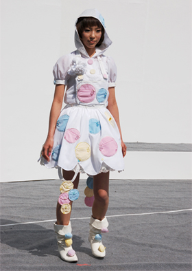
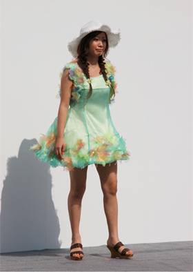
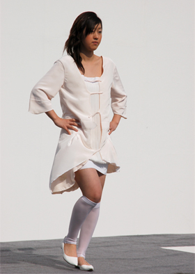
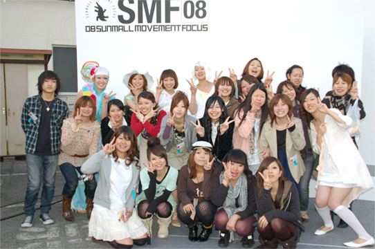

サンモール インディーズファッションコンテスト ★★ ［最新情報］
ＳＵＮＭＡＬＬ ＭＯＶＥＭＥＮＴ ＦＯＣＵＳ ２００８
インディーズファッションコンテスト
我が校の学生も毎年参加しているこのコンテスト、
４月６日、サンモール屋上にて二次審査がありました。
予報で６０％といっていた雨もまったく降らず快晴の中、
一時審査で入選した作品によるファッションショー形式でとり行われ、
学生が素晴らしい賞をいただくことも出来ました！
もちろん県内外・ほかの学校からの参加もあるので、
参加した学生、見に行った学生にとっても、良い刺激になったのではないでしょうか。
★技術賞★
２年アパレルコース 大田李沙
左から ヘアメイク・モデル・デザイナー（大田）
★入選★
２年衣装制作コース 片山美希

左から ヘアメイク担当(２人)・モデル・デザイナー（片山）
★入選★
１年アパレルコース 川崎まりも
左から モデル・デザイナー(川崎)
★入選★
２年アパレルコース 山本恵美

左から ヘアメイク(２人)・モデル・デザイナー（山本）
★入選★
２年アパレルコース 横店みか

左から デザイナー(横店)・モデル・ヘアメイク担当
最後に全員で記念撮影！
春休み返上でつくりあげたみなさん、お疲れ様でした★
